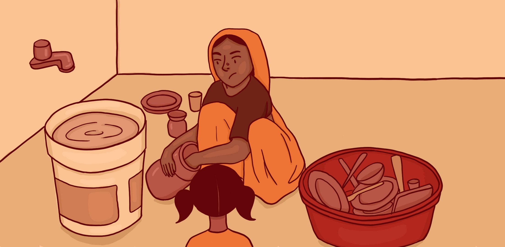
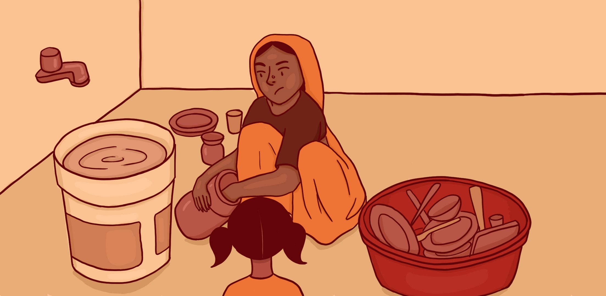

Soni is helping her mother with
household chores. She cannot go to school
due to the pandemic, and she doesn’t
have access to online education resources.
household chores. She cannot go to school
due to the pandemic, and she doesn’t
have access to online education resources.
 
